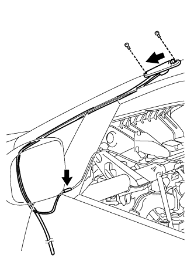

ĂNG TEN RAĐIÔ > LẮP |
| 1. LẮP CỤM ĂNG TEN |
|  |
Lắp ăng ten như trong hình vẽ.
Lắp 2 vít.
Lắp giắc nối.
| 2. LẮP TẤM ỐP PHÍA TRÊN BẢNG TÁP LÔ |
Tháo tấm ốp phía trên bảng táp lô (Xem trang Kích chuột vào đây).
| 3. NỐI CÁP VÀO CỰC ÂM ẮC QUY |
| 4. TIẾN HÀNH THIẾT LẬP BAN ĐẦU |
Tiến hành thiết lập ban đầu (Xem trang Kích chuột vào đây).
| 5. KIỂM TRA ĐÈN CẢNH BÁO SRS |
Kiểm tra đèn báo SRS (Xem trang Kích chuột vào đây).